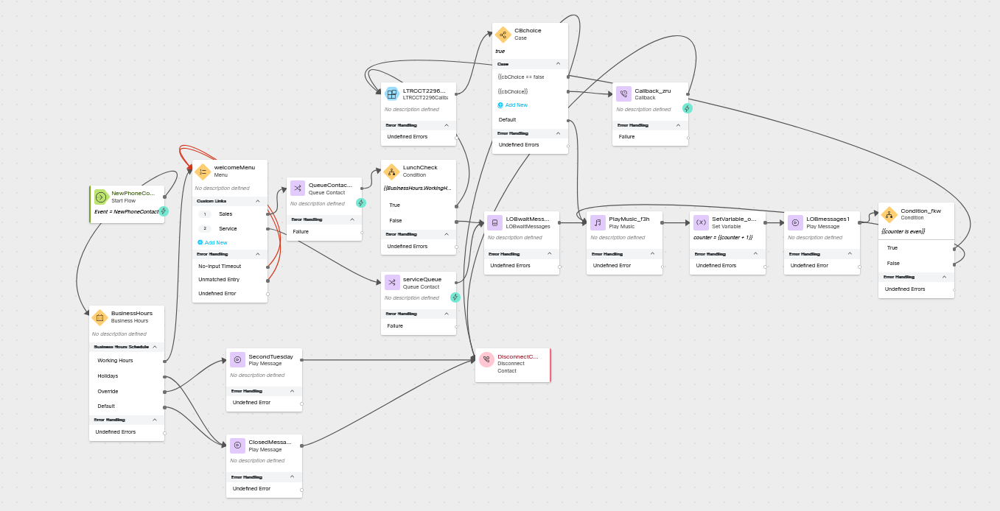
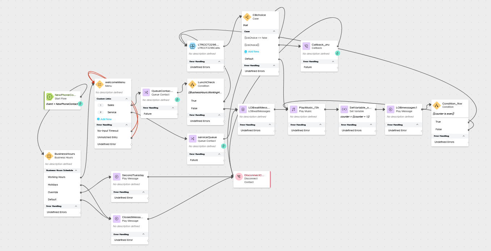

Multiple Lines of Business Using the Same Flow
Story
You do not always need to create a new flow for each line of business in the contact center, instead you can often reuse your flow logic and account for the differences including different queues and wait treatments. In this lab you will be adding a new line of business to the CL
_core flow.
High Level Explanation
- This section is optional but can explain the order of operations
Preconfigured elements
- If you are using a prebuilt subflow or function
- You should call attention to a shared configuration item which is important to the success of the flow, like a connector
Build
Open flow CL
Toggle the Edit switch on
Replace the welcome Play Message node with a Menu node
Click on the welcome Play Message and delete it.
Add a new Menu node
Activity Label:
welcomeMenu Enable Text-To-Speech
Select the Connector: Cisco Cloud Text-to-Speech
Click the Add Text-to-Speech Message button
Delete the Selection for Audio File
Text-to-Speech Message:
Thank you for calling Acme Corp. where we have been helping coyotes reach space since 1949. Click the Add Text-to-Speech Message button
Text-to-Speech Message:
For Sales, press 1. For Service, press 2. Select Make Prompt Interruptible
Digit Number: 1 Link Description:
Sales Digit Number: 2 Link Description:
Service Connect the No-Input Timeout node edge to the input node edge of this node
Connect the Unmatched Entry node edge to the input node edge of this node
Connect the Sales node edge to the Queue Contact node
Move the LunchCheck node after the Queue Contact node
Delete the connection between the Queue Contact node and the Play Music node
Delete the connection between the LunchCheck False node edge and the Queue Contact node
Connect the Queue Contact output node edge to the LunchCheck input node edge (you may want to move the nodes around to make things cleaner)
Connect the LunchCheck False node edge to the Play Music node
Add a Queue Contact node
Activity Label:
serviceQueue Select Static Queue
Queue:
yourQueueID Connect the Service node edge from WelcomeMenu to the input node edge of this node
Connect the output node edge of this node to the play music node
If you have already completed Offering a Callback option to calls actively waiting in the queue
Update the Subflow Node with a new variable mapping
Open the Subflow node
Scroll down to the Subflow Input Variables
Click Add New
Current Flow Variable:
welcomeMenu.OptionEntered Subflow Input Variable:
LOB
Edit the first case in the CBchoice node
Open the CBchoice node
Change the text in the first Link Description from {{cbChoice == false and BusinessHours.WorkingHoursShift_Name == "Lunch"}} to
{{cbChoice == false and BusinessHours.WorkingHoursShift_Name == "Lunch" and welcomeMenu.OptionEntered == "1"}}
Check your flow

Check your flow
Create a JSON flow variable
Name:
LOBmessages Type: JSON
Default Value:
{}
Add a new Function node
Function Name: LOBwaitMessages
Function Version Label: Live
Function Input Variables:
Current Flow Variable:
welcomeMenu.OptionEntered Function input Variable:LOB Output Settings:
Output Variable:
LOBmessages Path Expression:
$.messageList Delete the connection between the serviceQueue node and the Play Music node
Connect the serviceQueue node to this Function node
Delete the connection between the False node edge of LunchCheck and the Play Music node
Connect the False node edge of LunchCheck to this Function node
Connect the output node edge of this Function node to the Play Music node
If you have already completed Offering a Callback option to calls actively waiting in the queue
Add a Play message node
Activity Label:
LOBmessages1 Enable Text-To-Speech
Select the Connector: Cisco Cloud Text-to-Speech
Click the Add Text-to-Speech Message button
Delete the Selection for Audio File
Text-to-Speech Message:
{{LOBmessages[(counter % (LOBmessages| length))] }} Delete the connection between the Set Variable node for the counter and the Condition node
Connect the output node edge of Set Variable node to this Play Message node
Connect the output node edge of this Play Message node to the Condition node
Delete the old Play Message nodes
Delete both play message nodes which were previously used for the alternating messages
Connect the True node edge of the Condition node to the Subflow node
Connect the False node edge of the Condition node to the Play Music node
Check your flow

Check your flow
{kind=link}
If you have NOT completed Offering a Callback option to calls actively waiting in the queue
Add a Play message node
Activity Label:
LOBmessages1 Enable Text-To-Speech
Select the Connector: Cisco Cloud Text-to-Speech
Click the Add Text-to-Speech Message button
Delete the Selection for Audio File
Text-to-Speech Message:
{{LOBmessages[(counter % (LOBmessages| length))] }} Delete the Condition node
Delete both play message nodes which were previously used for the alternating messages
Connect the output node edge of Set Variable node to this Play Message node
Connect the output node edge of this Play Message node to the Play Music node
{kind=link}
Publish your flow
Turn on Validation at the bottom right corner of the flow builder
If there are no Flow Errors, Click Publish
Add a publish note
Add Version Label(s): Test
Click Publish Flow
Map your flow to your inbound channel
Navigate to Control Hub > Contact Center > Channels
Locate your Inbound Channel (you can use the search):
Select the Routing Flow:
CL _core Select the Version Label: Test
Click Save in the lower right corner of the screen
Testing
- Launch the Agent Desktop and log in using the Desktop option.
- Using Webex, place a call to your Inbound Channel number